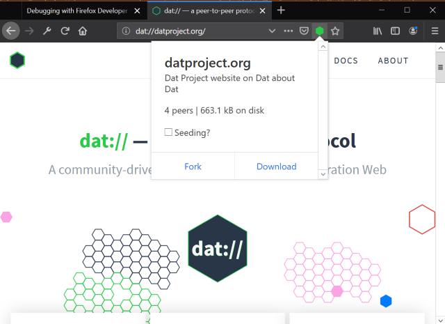
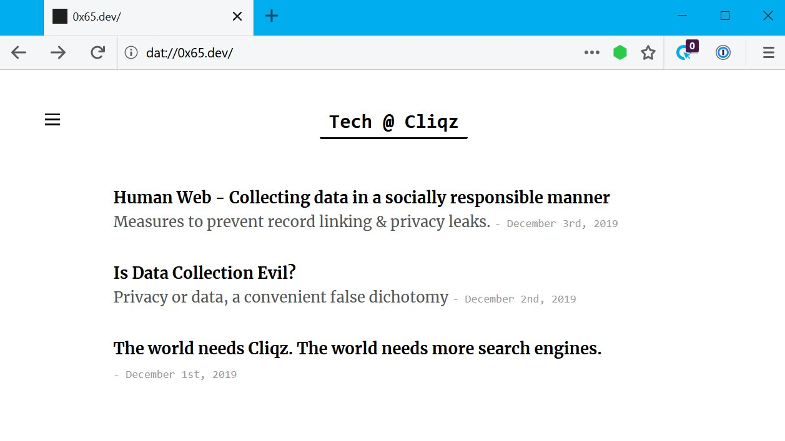

@sammacbeth combined libdweb with random-access-idb-mutable-file and few libdweb adapters to get dat implementation running in Firefox web extension context. This brought dat:// protocol support into Firefox through dat-webext web extension. Which also provides Beaker Browser APIs for the interoperability.

The dat-webext also works in Cliqz browser.
